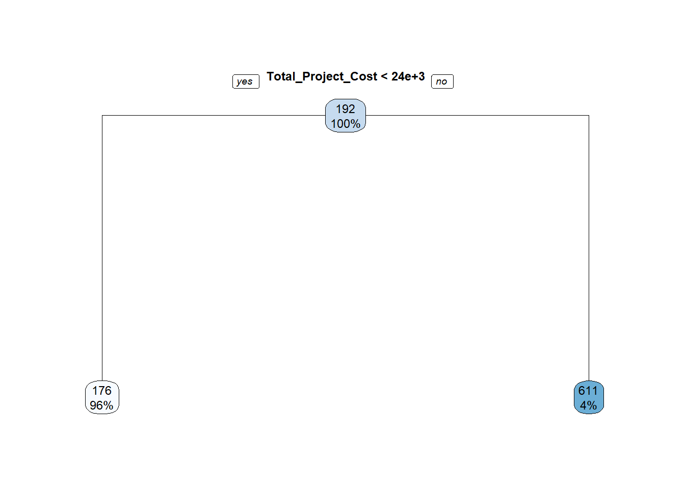

K-Nearest neighbours (or KNN), is a way of classifying a new observation based on already existing observations that have previously been classified. It is ‘black box’ - we don’t know the rules to understand the relationships between features and the classifications.
We can use this algorithm to see if we can predict if a project will exceed its target. In this instance, we are using 8 predictor variables, and the target variable is “Over Target” (True or False).
We can split the dataset into a Test dataset and a Training dataset to predict the outcome variable, and then evaluate those predictions.
| Variables Used |
|---|
| Award |
| Total Cost |
| Partnership Funding |
| IMD Rank |
| Baseline |
| 12 Month Target |
| Female Target |
| Male Target |
| Over Target - Target Variable |
For the unclassified observations, the algorithm measures the K closest neighbours based on distance (the value of K in this instance in the square root of the number of rows in the dataframe). The algorithm selects which class is the most common in the training dataset, and predicts those new observations accordingly
The below table shows the accuracy of the KNN algorithm when classifying a test dataset. It classified 60% correctly, and 40% incorrectly:
| Correct? | Proportion |
|---|---|
| Correct | 0.6 |
| Incorrect | 0.4 |
We can see more detail around the classifications using the CrossTable function. As can be seen in the table below, the main issue with the predictions were that 45 of those that were “True” (i.e. were over the 12 month target), were predicted “False”.
Only 11% (9 cases) of those that were FALSE were misclassified as TRUE.
##
##
## Cell Contents
## |-------------------------|
## | N |
## | N / Row Total |
## | N / Col Total |
## | N / Table Total |
## |-------------------------|
##
##
## Total Observations in Table: 135
##
##
## | d_test_pred
## test_d$Over_Target | FALSE | TRUE | Row Total |
## -------------------|-----------|-----------|-----------|
## FALSE | 71 | 9 | 80 |
## | 0.887 | 0.112 | 0.593 |
## | 0.612 | 0.474 | |
## | 0.526 | 0.067 | |
## -------------------|-----------|-----------|-----------|
## TRUE | 45 | 10 | 55 |
## | 0.818 | 0.182 | 0.407 |
## | 0.388 | 0.526 | |
## | 0.333 | 0.074 | |
## -------------------|-----------|-----------|-----------|
## Column Total | 116 | 19 | 135 |
## | 0.859 | 0.141 | |
## -------------------|-----------|-----------|-----------|
##
## The 60% accuracy is problematic for applying this to new applications as it currently stands.
One potential way to improve the predictions would be to add other predictor variables (e.g. including target numbers around age, ethnicity, and disability).
The ‘tree’ is a sequence of decisions (branches) that aim to maximise the reduction in the variation in the outcome variable (in this case, the number of participants at 12 months).
The model below shows the first “branch”, i.e. the most important variable out of those included that explain variation. This is the “Total Project Cost” - if the total cost is greater than or equal to £23,707.93 (4% of the awards), the mean number of participants is 611 . Less than this amount, and the mean number is 176, and this accounts for 96% of the awards.
The model was limited to the most important variable (branch 1). The more depth we go down, the better the model will ‘fit’ our data. This can be problematic if we tried to predict an outcome based on this model. The data may become ‘over-fitted’ (i.e. the model is only acccurate when applied to this specific dataset).

## n= 841
##
## node), split, n, deviance, yval
## * denotes terminal node
##
## 1) root 841 299344300 191.6587
## 2) Total_Project_Cost< 23707.93 810 201888500 175.6049 *
## 3) Total_Project_Cost>=23707.93 31 91792410 611.1290 *## Total_Project_Cost Partnership_Funding
## 5663372 5297993